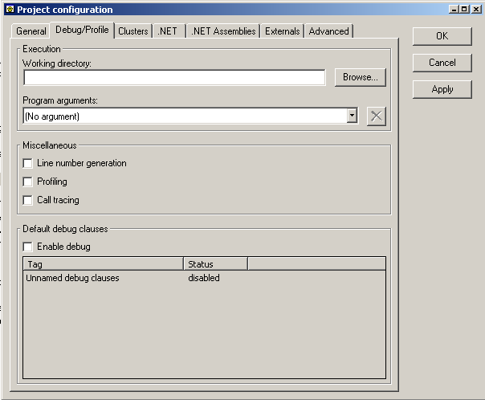

Here is what the debug tab look like when you haven't compiled your system you just created.

You can specify the location from where your program will run. By default the location is `your_project_path/EIFGEN/W_code'. This is useful when your application relies on the use of resource files located at a precise location.
You can also specify one or more command line arguments. To add one, simply type your command line arguments in the combo box and press enter. To remove one, select it from the combo box and then click on the red cross. To select one, simply choose it from the combo box, and when you will click on Apply or Ok they will be automatically taken into account, no need to recompile.
By default all debug clauses are turned off.
The first step to enable them is to select the `Enable debug' check box. Then select the one you want to enable/disable and do a right click on it and a contextual menu will appear in which you can chose to enable/disable the debug clause.
Before you compile for the first time your project with an Ace file that has been automatically created, you won't see any debug clauses. They will automatically be added by the compiler at the end of your first compilation. When this is done, you can enable/disable each of them.